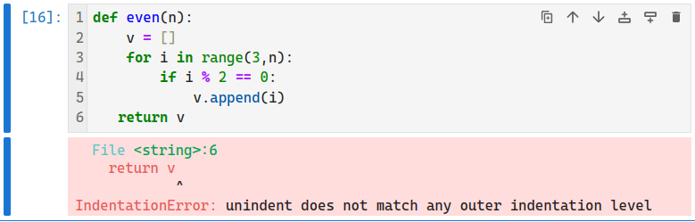

SageMath 基本运算与函数
archive time: 2024-08-30
第一篇教程，算是简单开个头
基本运算
作为使用 SageMath 的第一个例子，让我们来看看 SageMath 中的基本运算该怎么写
加法使用 + 符号来表示
1234 + 5678
# => 6912
乘法则使用 * 来表示
1234 * 5678
# => 7006652
知识点
| 运算 | 例子 |
|---|---|
| 加法 | 2 + 2 |
| 减法 | 5 - 2 |
| 乘法 | 2 * 3 |
| 除法 | 5 / 2 |
| 整除 | 5 // 2 |
| 乘方 | 3 ^ 2 |
| 乘方* | 3 ** 2 |
| 求余 | 10 % 4 |
其中除法默认是精确的，例如：
5 / 2
# => 5/2
如果想要获得数值解，可以使用 N() 或者 n() 函数
n(5 / 2)
# => 2.50000000000000
N(5 / 2)
# => 2.50000000000000
1 / 0 会得到一个除零错误：

小练习
将数字 ，，，， 加起来
1 + 2 + 3 + 4 + 5
add([1, 2, 3, 4, 5])
计算 的平方
5 ^ 2
计算 的 乘 次方
3 ^ (7 * 8)
添加括号使 成立
(4 - 2) * (3 + 4) == 14
函数
对于
2 + 3 + 4这样的一个式子， 有一个等价形式add([2, 3, 4])， 其中add被称为一个 函数
所有 SageMath 中的函数都使用小括号，并且一般是蛇形格式命名，例如 find_root()
之前提到如果想要数值解，可以使用 N() 或者 n()，
其实这两个函数都是 numerical_approx() 函数的 别名
numerical_approx(pi, digits=16)
# => 3.141592653589793
最大值和最小值分别对应函数 max() 和 min()，
而在 a 到 b 之间的随即整数可以通过 randint(a, b) 得到，
具体的函数信息可以通过 <func-name>? 的方式来查询，例如 randint?
max([2, 7, 4])
# => 7
min([4, 5, 3])
# => 3
randint(0, 100)
# => 75
除了以上介绍的函数，SageMath 还内置了许多常用的数学函数，例如 exp() 和 三角函数，对数函数 等
simplify(log(2, sin(pi / 6)))
# => -1
知识点
| 运算 | 例子 | 函数格式 |
|---|---|---|
| 加法 | 2 + 2 | add([2, 2]) |
| 减法 | 5 - 2 | 无 |
| 乘法 | 2 * 3 | mul([2, 3]) |
| 除法 | 5 / 2 | 无 |
| 整除 | 5 // 2 | 无 |
| 乘方 | 3 ^ 2 | power(3, 2) |
| 乘方* | 3 ** 2 | pow(3, 2) |
| 求余 | 10 % 4 | 无 |
| 取模 | 无 | mod(10, 4) |
并非所有运算都有等价函数形式，例如减法和除法
小练习
通过函数计算
mul([2, add([3, 4])])
将两个在 到 之间的随机整数相加
add([randint(20, 80),randint(20, 80)])
后记
SageMath 是基于 Python 的 CAS，所以在语法上基本就是 Python 语法， 所以只要学会 Python 就可以学会 SageMath，或者说学会 SageMath 就可以学会 Python
特别需要注意的一点，SageMath 和 Python 一样，是动态类型语言，所以一个变量背后的值的类型不一定不变，
需要自己多注意，使用 type() 可以确认变量类型